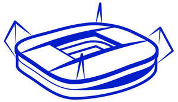

Trade Mark Journal No.2025/048 28 November 2025
UK00004293507 12 November 2025 (4,5,6,9,12,16,18,25,28,32,38,39,41,43)

- Class 4
- Lubricants; engine oils and fuels including petrol, gasoline, diesel oil, gas and bio fuels; candles; waxes; greases; natural gas; liquid gases; industrial oils and greases; lubricating oils and greases; fuels; liquefied petroleum gas; non chemical additives for motor fuel, for lubricants and for greases; dust absorbing, wetting and binding products; lighting fuel; lubricants, oils and greases and lubricating preparations for industrial use; cutting oils for industrial use; milling oils; cutting and milling fluids.
- Class 5
- Pharmaceutical products; creams, balms and sprays for the treatment of rheumatic pain, muscle sprains, bruises; molding wax for dental use; hygienic products for medical use; eye care medicines; medicinal tea; food additives for medical use or dietetic food additives for medical use; food for babies; vitamin preparations; beverages enriched with added vitamins (for medical purposes); babies' diapers of paper; nutritional drinks for consumption as meal substitutes for medical purposes; foodstuffs made with minerals for medical purposes; air purifying products; vehicle deodorizers; adhesive dressings, liquid dressings for skin wounds, dressings for household or personal use; first-aid creams, gels, liquids and sprays for the treatment of wounds, burns, blisters, itching and sunburn; antiseptic and antibacterial treatments; filled first-aid kits; skin care ointments; pharmaceutical pain relievers for sinus, allergy and anti-itch treatments; tissues impregnated with pharmaceutical lotions; medical inhalation preparations; vitamin products (not for medical or dietetic purposes); calcium supplements in chewable solid form; sanitary tampons, sanitary panties and pads; hygienic lubricants; eye drops, eye drops for contact lenses; test strips for measuring blood glucose levels; air purifying and freshening products; air fresheners for vehicles; nutritional, dietetic and/or food supplements based on flours, plant extracts, cereals, rice, tapioca, sago, including those containing vitamins, minerals, essential fatty acids and trace elements, other than for medical use.
- Class 6
- Aluminum foil; metal rings and chains for keys; statues, statuettes, sculptures and trophies made of common metal; fixed metal towel dispensers; paper towel dispensers (of metal); metallic insignia for vehicles; vehicle number plates, of metal; badges of metal for vehicles; pins [metal hardware]; printed metal covers for collection purposes (pogs); all the above products made of common metals or their alloys.
- Class 9
- Exposed films, slides; video games; video game cassettes; video game disks; software (recorded programs), including software for games; computer programs and databases; recorded or downloaded sounds, images or data; videotapes, magnetic tapes, magnetic disks, DVDs, mini-disks, floppy disks, optical disks, compact disks, CD-ROMs, video disks, memory cards, USB mass storage devices, either blank or pre-recorded with music, sound or images (which may be animated cartoons); holograms; electronic publications provided via CD-ROMs, databases and the Internet; spectacles, sunglasses, diving and swimming goggles; cases, cords and chains for sunglasses and spectacles; binoculars; magnets and ornamental magnets; directional compasses; sound and image recording, transmission and reproduction apparatus; satellite dishes; decoders, namely software and hardware capable of converting, supplying and transmitting sound and visual data; virtual reality game software; Graphic user interface software for computers; software related to value tokens, virtual currencies, digital tokens and crypto currencies; application software for mobile devices, in particular for mobile phones, tablets and laptops; television set-top boxes; battery chargers for use of mobile phones; computer software to enable uploading, downloading, accessing, posting, displaying, editing, blogging, and otherwise providing electronic media and information via computer and communication networks; software for sending and receiving electronic messages, graphics, images, audio and audio visual content via global communication networks; computer software for the collection, editing, organizing, modifying, transmission, storage and sharing of data and information; computer software for editing, modifying, compiling, storing and sharing video; computer software for interactive games; downloadable software namely virtual goods, being digital art, photographs, videos, or audio recordings; downloadable digital artwork and images; digital art, digital collectibles, namely photographs, videos or audio recordings, authenticated by non-fungible tokens (nfts); cryptographic software based on blockchain technology, related to digital Tokens; digital collectibles created with blockchain-based software in the nature of art, photos, images, videos, and audio recordings; downloadable software for providing access to, and related to, digital art and collectibles, crypto-collectibles, non-fungible tokens nfts, application tokens, and digital currencies; downloadable software for use in electronically buying, selling, receiving, sending, storing, trading, and processing transactions to and related to digital art and collectibles, crypto-collectibles, nfts, application tokens, and digital currencies; downloadable software for providing information, communications, and authentications for social media, digital art and collectibles, crypto-collectibles, nfts, application tokens, and digital currencies; downloadable digital music files authenticated by non-fungible tokens [NFTs]; downloadable digital image files authenticated by non-fungible tokens [NFTs]; podcasts; downloadable podcasts; downloadable software for downloading, receiving, sending, and storing software, data, links, video files, and image files from the internet; downloadable software for providing access to digital marketplaces and auctions; computer application software for blockchain-based platforms; televisions; flat screens, liquid crystal display screens, high-definition screens and plasma screens; radios; home cinema systems; video recorders; CD players; DVD players; MP3 players; cassette players; minidisk players; digital music players; loudspeakers; headsets, earphones; computers, including laptops, note books and tablets; karaoke systems; sound-editing and mixing systems; video image editing and mixing systems; electronic data processing apparatus; computer keyboards; computer screens; modems; computer mouse devices, mouse pads; navigation systems; personal digital assistants (PDA); electronic pocket translators; dictaphones; electronic diaries; scanners; printers; photocopiers; facsimile machines; telephones, automatic answering machines; videophones; mobile telephones; accessories for mobile phones included in this class, namely mobile phone cases and covers, hands-free kits for mobile phones, earphones and headsets for mobile phones, mobile phone keyboards, straps for mobile phones, special cases for carrying mobile phones, cameras and photographic camera attachments for mobile phones; remote controls for television sets and video systems; teleconference systems; calculators; credit card readers; currency converters; automated teller machines; video cameras, portable cameras with built-in video recorders; photographic equipment, photographic cameras, cameras (cinematographic cameras), projectors, special cases and cords for photographic cameras and instruments, electric cells and batteries; computer screen-saver programs; recorded or blank magnetic, digital or analog sound or image recording media; magnetic cards (encoded); memory cards (blank or pre-recorded); microchip or magnetic cards; microchip or magnetic credit cards; microchip or magnetic telephone cards, magnetic or microchip cards for change dispensers, magnetic or microchip cards for automated teller machines and currency conversion machines, prepaid magnetic or microchip cards for mobile telephones, magnetic or microchip cards for travelling and shows, magnetic or microchip check guarantee cards and magnetic or microchip debit cards; alarms; payment systems for electronic commerce, wind socks (wind-direction indicators); distance-measuring equipment; speed measuring and displaying equipment; protective gloves; audio receivers, sound amplifiers; decoders, namely, software and computer hardware which can convert, supply and transmit sound and visual data; disk drives for computers; protected semiconductors; integrated circuits with recorded programs for processing audio, visual or computer data; rechargeable batteries; central processing units and converters for audio and visual data; cables for data transmission; payment apparatus for electronic commerce; protective helmets for sports; magnetic identity bracelets; air and fuel coefficient analyzers; remote controls for locking cars; photovoltaic cells and solar module systems; security, safety, protective and signaling apparatus and equipment; navigation, guidance, tracking, targeting and map making devices; electric weighing, measuring, signaling, checking (supervision), life-saving apparatus and instruments, included in class 9; warning lamps for vehicles (not parts of vehicles); navigational equipment for vehicles; apparatus for navigation, navigational instruments; telematics apparatus; telematics terminal apparatus; electronic locks; electronic controllers and electronic control systems; electronic tickets, encoded; tickets in the form of magnetic cards.
- Class 12
- Bicycles, motorcycles, motor cars, trucks, vans (vehicles), buses, camping cars, refrigerated vehicles; airplanes and boats; air balloons, dirigible balloons (airships); automotive accessories namely glare shields, pneumatic tires, casings for pneumatic tires, luggage racks, ski racks, rims and wheel hubcaps; seat covers, vehicle covers, baby carriages, strollers, safety seats for infants and children (for vehicles); land vehicle engines; radiator heat shields for land vehicles; headlight shields; steering wheels for vehicles; trailers; cushions as car accessories; motors and drives for land vehicles; anti-theft alarms for vehicles, anti-theft devices for vehicles.
- Class 16
- Coloring and drawing books; activity books; magazines; newspapers; books and journals, including those connected with sportsmen and women or sports events; page markers; printed teaching material; score sheets; programs for events; albums for events; photograph albums; autograph books, printed timetables, brochures; photographs of players for collectors; bumper stickers, stickers, albums, sticker albums; posters; photographs; paper tablecloths; paper serviettes; paper bags; invitation cards; greeting cards; gift-wrapping paper; coasters and table mats of paper; garbage bags of paper or plastic materials; food-wrapping paper; food preservation bags; paper coffee filters; paper labels; paper hand towels; toilet paper; napkins for removing make-up, of paper; handkerchief boxes of paper and cardboard; paper handkerchiefs; stationery and instructional and teaching material (except apparatus); typewriter paper; copying paper; envelopes; writing pads; document sleeves; tissue-paper; exercise books; paper sheets for note-taking; writing paper; binder paper; files; book cover paper; luminous paper; self-adhesive paper for notes; paperweights; crepe paper; cloth paper; paper badges or insignia; paper flags; paper pennants; writing instruments; fountain pens; pencils; ball-point pens; ball-point pen and pencil sets; felt-tip markers; fiber-tip pens and felt-tip pens; markers; ink, inking pads, rubber stamps; typewriters (electric or non-electric); lithographs, lithographic works of art; paintings (pictures), framed or unframed; paint boxes, paintings and coloring pencils; chalks; pencil ornaments; blocks for printing; address books; tickets, admission tickets, lottery tickets; bank and travellers' checks; comic books; calendars; postcards; advertising panels, banners; transfers (decalcomanias); sticking labels; office requisites (except furniture); correction fluids; rubber erasers; pencil sharpeners; stands and containers for office articles; paper clips; thumbtacks; rulers; adhesive tapes for stationery, adhesive tape dispensers; staples; stencils; document folders; bulldog clips; memo pad holders; bookends; holders for books; stamps (seals); postage stamps for collectable purposes; commemorative stamp sheets; credit cards, telephone cards, cash cards, ATM cards, cards for traveling and for shows, check guarantee cards and debit cards being non-magnetic and of paper or cardboard; paper luggage labels; passport holders; checkbook holders; metal note clips.
- Class 18
- Leather and imitation leather; leather straps/thongs; umbrellas; parasols; sports bags (other than those adapted to the products which they contain); leisure bags; traveling bags; backpacks; school bags; bags to be pinned on belts; handbags; cases for business cards; leather bags; beach bags; tote-bags; garment bags for travel; suitcases; document cases; labels for suitcases; straps for suitcases; briefcases (leather ware); vanity cases (empty), toiletry bags; key cases (leather ware); wallets; purses; whips; collars for animals; animal leashes; identity-card holders.
- Class 25
- Clothing; shoes and footwear; headgear; shirts; knitted fabrics (garments); pullovers; sleeveless pullovers; T-shirts; vests; singlets; sleeveless singlets, frocks; skirts; underwear; bathing suits; bath robes; shorts; trousers; sweaters; bonnets; caps; hats; sashes for wear; scarves; shawls; peaked caps; tracksuits; sweatshirts; jackets, sports jackets, stadium jackets (chasubles); blazers; waterproof clothing; coats; uniforms; neckties; bandanas; wristbands; headbands; gloves; aprons; bibs, not of paper; pyjamas; play clothes for infants and children; stockings and socks; stocking suspenders; belts; suspenders and braces; sandals, thong sandals; athletic footwear, namely outdoor shoes, hiking shoes, basketball shoes, cross-training shoes, cycling shoes, indoor sports shoes, running and track-field shoes, flip-flops, football shoes (indoor and outdoor), football boots, canvas shoes, tennis shoes, urban sports shoes, sailing shoes, aerobic shoes; sports apparel namely fleece tops, jogging suits, knit sportswear, sport casual pants, polo shirts, sweatshirts, sweatpants, soccer style shirts, rugby-style shirts, socks, swimwear, tights and leg warmers, tracksuits, functional underwear, singlets, bra tops, leotards, snow suits, snow jackets, snow pants.
- Class 28
- Games and toys; coin-operated video games for game halls (arcade games); sports balls; playing balls; board games; tables for table football; dolls and plush toys; vehicles (toys); puzzles; balloons; inflatable toys; playing disks (pogs); playing cards; confetti; sport and gymnastics articles; football equipment, namely footballs, gloves, knee, elbow and shoulder pads, shin guards; football goals; sports bags and receptacles (adapted to the objects) to carry sports articles; party hats (toys); electronic games other than for use with a television set only; rubber or foam hands (toys); robots for entertainment (toys); appliances for gymnastics; kites; roller skates; scooters (toys); skateboards; scratch cards, for playing lottery games; small electronic games intended for use with a television set; video game apparatus; gamepads; hand- or voice-activated gamepads, steering wheels for video games and dancing mats for video games; electronic games with liquid crystal displays; game consoles; toys for pet animals.
- Class 32
- Soft drinks; concentrates, syrups and powders for making non-alcoholic beverages; mineral and carbonated waters; other non-alcoholic beverages; isotonic beverages; energy drinks; hypertonic drinks, hypotonic drinks; diet beverages; beverages enriched with added vitamins not for medical use; fruit and vegetable drinks; fruit and vegetable juices; iced fruit beverages non-carbonated, non-alcoholic frozen flavored beverages; beers; strong brown ales; light beers and ales, beers with little or no alcohol.
- Class 38
- Telecommunication services; communication by mobile telephones; telex communication; communication via electronic computer terminals linked to telecommunication networks, databases and the Internet or via wireless electronic communication devices; telegraph communication; telephone communication; communication by facsimile transmission; radio call services; telephone or video conference services; television program broadcasting; broadcasting of cable television programs; radio program broadcasting; broadcasting and transmission of radio and television program on sport and sporting events; podcasting services; transmission of podcasts; news and news information agency services; message transmission services; rental of telephones, fax machines and telecommunication apparatus; transmission of commercial Internet pages on-line or via wireless electronic communication devices; transmission and broadcasting services for radio and television programs via the Internet or via any wireless electronic communication network; electronic message transmission; simultaneous broadcasting of film recordings and sound and video recordings; provision of access to telematics servers and to real-time conversation forums; computer-assisted message and image transmission; telecommunication via fiber optic networks; provision of access to a global computer network or of interactive communication technologies for access to private and commercial purchasing and ordering services; telecommunication of information (including web sites), computers and other data; transmission of information (including telematics sites) by telecommunication, of computer programs and other data; electronic mail services; providing access to the internet or to any wireless electronic communication network (telecommunication services); provision of connections for telecommunications with a global computer network (Internet) or with databases; provision of access to web sites offering digital music on the Internet via a global computer network or via wireless electronic communication devices; leasing access time to MP3 web sites on the Internet via a global computer network or via wireless electronic communication devices; leasing access time to a database server center (telecommunication services); leasing access time to a computer database (telecommunication services); transmission of digital music by telecommunications; on-line transmission of electronic publications; digital music transmission on the Internet or via any wireless electronic communication network; digital music transmission via MP3 Internet sites; simultaneous distribution and/or broadcasting of film recordings and sound and video recordings; simultaneous distribution and or broadcasting of interactive educational and entertainment products, interactive compact discs, CD-ROMs, computer programs and computer games; provision of access time to blackboards (information and notice boards), discussion forums (chatrooms) and blogs in real time via a global computer network (communication services); telecommunication services devoted to retailing by means of interactive communications with customers; telecommunication of multimedia; videotext and teletext transmission services; information transmission via communication satellite, micro-wave or by digital or analog electronic means; digital information transmission by cable, wire or fiber; information transmission via mobile telephones, telephones, facsimile transmission and telex; telecommunication services for receiving and exchanging information, messages, images and data; providing access to discussion groups on the Internet; providing access to internet platforms (also mobile internet) in the nature customized web pages featuring user-defined or specified information, personal profiles; provision of access to search engines to obtain data and information on global networks.
- Class 39
- Operation of a travel agency, namely travel arrangement and reservation; travel ticket reservation services and travel information and travel ticket sales services; air, railway, bus and truck transportation services; boat transportation; arrangement of trips by boat; arrangement of tourist trips; vehicle rental; rental of parking spaces; taxi services; transportation of goods by boat, land and air; distribution of water, heat, gas or electricity; newspaper, magazine and book delivery; postal services, messenger and mail delivery services; storage of goods; distribution of solvents, paraffins, waxes, bitumens and oil products, excluding liquid gas; distribution (delivery) of films and of sound and image recordings; distribution (delivery) of interactive educational and recreational products, of interactive compact disks, of CD-ROMs, of computer programs and of computer games; professional consultancy services relating to the distribution of power and electricity; information relating to transport, rental of vehicles, rental of motor vehicles and utility vehicles; rental of vehicle roof racks; transportation information; transportation of vehicles; transport reservation; vehicle towing; warehousing services; transport; packaging and storage of goods; distribution (transport) of tickets; GPS navigation services; travel arrangement; towing; taxi services, motor vehicle transport, transportation logistics; rental of vehicles, in particular cars; passenger transport, in particular by bus; freight brokerage; delivery of goods and parcels; traffic information; tracking and monitoring of fleet vehicles using navigational and positioning apparatus.
- Class 41
- Education; training; entertainment; operating lotteries and competitions; sport-related betting and game services; hospitality services (sport, entertainment); hospitality services, namely customer reception services (entertainment services), including provision of admission tickets for sporting or entertainment events; issuance of tickets, including on a global computer network (the Internet), for sporting, entertainment, cultural and educational events; sports tickets agency services; providing online information in the fields of sports and sports events from a computer database or the internet; entertainment services relating to sporting events; sporting and cultural activities; organization of events and sporting and cultural activities; organization of sporting competitions; organization of events in the field of football; operation of sports facilities; fun park services; health and fitness club services; video and audiovisual systems rental; rental of interactive educational and recreational products, of interactive educational and recreational compact disks in the field of sports, of CD-ROMs and computer games; production of interactive compact discs and of CD-ROMS [film and/or music production]; television and radio coverage of sports events; production services for radio and television programs and videotapes; simultaneous distribution of film recordings and sound and video recordings; production of podcasts; creation [writing] of podcasts; provision of entertainment via podcast; ticket reservation services and information for entertainment, sporting and cultural events; sports camps services; timing during sports events; organization of beauty contests; interactive entertainment; online betting and game services on the Internet or on any wireless electronic communication network; provision of services relating to raffles; information in the field of entertainment (including in the sports field), provided online from a computer database or via the Internet or via any wireless electronic communication network; electronic game services transmitted via the Internet or on mobile telephones; book publishing; on-line publishing of electronic books and newspapers; audio and video recording services; production of animated cartoons for the movies, production of animated cartoons for television; rental of sound and image recordings for entertainment; information in the field of education provided online from a computer database or via the Internet or via any wireless electronic communication network; translation services; photography services; rental of football stadiums; programming and/or rental of film recordings and of sound and video recordings; providing statistical and other information on sports performances, radio and television programming; provision of entertainment infrastructures, namely, VIP lounges and sky boxes both on and off site sports facilities for entertainment purposes.
- Class 43
- Restaurants, snack-bars; reception services, namely supply of food and beverages; catering services; hotel services; accommodation and restaurant services, hotel and temporary accommodation reservations; hospitality services, namely provision of food and beverages at sporting events or entertainment.
Union des Associations Européennes de Football (UEFA)
Representative: Stobbs